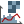

3 Prepare the data
Species distribution models (SDMs) are built using two main types of data. Location data show where a species has been observed, while environmental data describe the conditions in those places. Working with these data is an essential part of SDM, but it can also be challenging. Common issues include uneven sampling of observations, overlap between environmental variables, changes in relationships between variables across datasets, and environmental conditions in the prediction area that were not present in the training data [1].
In this chapter, you will learn a number of simple and practical strategies to recognise and address some of these issues. The methods presented here are not exhaustive, and there is rarely a single “correct” solution. Instead, the goal is to help you develop a critical and thoughtful approach to modelling, and to encourage you to explore, test, and compare different choices as you build and interpret your own SDMs.
3.1 Species occurrences
One fundamental assumption of SDMs is that the entire area of interest has been systematically or randomly sampled [2, 3]. In reality, this assumption is rarely met. Species occurrence data are often affected by sampling bias, meaning that some parts of the study area are sampled more intensively than others. For example, some areas may be more accessible (Figure 3.1) or more popular with visitors, resulting in more data from those locations. Another source of bias comes from intensive monitoring in certain areas.
This can lead to oversampling in some areas, making the conditions in these areas appear to be more suitable for the species, even though the higher number of observations mainly reflects where people are more likely to collect data.
There are several ways to deal with oversampling, focusing on the presence points (this paragraph) or the background points (next paragraph) [3, 4].
{kind=link}
Another important issue is undersampling, which occurs when parts of the study area are rarely or never visited, for example because they are difficult to access. In undersampled areas, environmental conditions may appear to be less suitable for the species simply because no observations are available. This does not necessarily mean that the species is absent. In many cases, we cannot distinguish between true absence and lack of sampling.
Undersampling is particularly difficult to address when large parts of a species’ potential range have not been sampled adequately. This uncertainty directly affects how confidently model predictions can be interpreted for those areas.
Although it does not solve the problem, comparing GBIF occurrence data with other information sources, such as Red List range maps (Figure 2.8), can help you assess where undersampling is likely to occur and how it is distributed across the study area.
3.1.1 Point densities
Before proceeding, let’s check whether our GBIF occurrence dataset shows any signs of bias by analyzing how the density of occurrences varies across the study area. We can do this by counting the number of observations within each grid cell. To accomplish this, we will use the r.vect.stats module. It is one of the addons installed in Section 1.2.2. With the module we can create a raster layer with per raster cell the number of points from a vector point layer that fall within that cell.
We want to create the layer in the Erebia_alberganus mapset, so we switch to that mapset first.
Step 3.1
{kind=link}
The raster layer that will be created with v.vect.stats should cover the same spatial extent as the point data and use the same spatial resolution as the bioclimatic layers, which is 2.5 arc degrees. To ensure this, we need to set the computational region accordingly (remember, the computational region defines the extent and resolution for raster operations in GRASS GIS).
We use the g.region module for this. The spatial extent of the region is defined using the vector parameter, which is set to the occurrences layer. The spatial resolution is taken from the bio_1@climate layer by setting the raster parameter. Finally, the align parameter ensures that the computational region is aligned with the grid of the bio_1@climate raster.
Step 3.2
To change the region settings, open the g.region dialog, and fill in the following parameters:
| Parameter | Value |
|---|---|
| raster | bio_1@climate |
| align | bio_1@climate |
| vector | occurrences |
We set the vector parameter to the occurrences layer to define the spatial extent of the region. The raster parameter is set to the bio_1@climate layer, which determines the spatial resolution of the region. Finally, the align parameter ensures that the region is aligned with the grid of the bio_1@climate raster layer.
We can now run the r.vect.stats module. The method parameter specifies which statistic is calculated from the vector points for each raster grid cell. Here, we use method=n to count the number of points per cell, where n indicates a point count.
Step 3.3
To calculate the point densities per grid cell, open the r.vect.stats dialog, and use the following parameter settings.
| Parameter | Value |
|---|---|
| input | occurrences |
| output | pointdensities |
| method | n |
After completing these steps, we have a raster layer (pointdensities) with the number of occurrences per cell. Remember that the extent and resolution of the raster cell is based on the extent of the point data and the resolution of the bioclim layers (Step 3.2). In the next step, we compute some statistics. To exclude cells with 0 (zero) occurrences, we convert them to NULL using the r.null function. This ensures that only the cells where the species was observed (non-zero values) will be considered in subsequent steps.
Step 3.4
We use r.univar to compute the range and median of number of observations per grid cell and the r.boxplot addon to visualize the distribution of point densities and to identify possible outliers.
Step 3.5
Open the r.univar dialog, and use the following parameter settings.
| Parameter | Value |
|---|---|
| map | pointdensities |
| Calculate extended statistics (e) | ✅ |
Install the r.boxplot and run it with the following parameter settings.
| Parameter | Value |
|---|---|
| Map | pointdensities |
| Include outliers (o) | ✅ |
The -e flag tells r.univar to calculate extended statistics, like the median.
The results of r.univar show that the number of observations per raster cell range from 1 to 346, with a median of 3, and an average of 10. These results and the boxplot in Figure 3.3 show that even though within the majority of non-NULL raster cells there is only one observation, there are also raster cells with many more observations, up to 240 point observations.
{kind=link}
If we look at the attribute table, we’ll see that where there are many observations, they often span several years and often involve the same observer. This suggests that certain areas have been surveyed more extensively than others, potentially leading to uneven sampling effort across the species’s range.
3.1.2 Spatially thinning
The results above show that in some areas many observations are clustered close together. This indicates sampling bias and may cause the model to place too much weight on these locations.
A common way to reduce this effect is spatial thinning, also called subsampling [5, 6]. Spatial thinning reduces clustering by removing observations that are very close to each other. One implementation is to remove points that occur within a specified minimum distance. This approach is available in the v.decimate module.
Another approach is to retain only one occurrence point per raster cell at a chosen resolution, as illustrated in Figure 3.4. This approach is implemented in the v.maxent.swd module.
{kind=link}
For this tutorial, we’ll use the thinning option in the v.maxent.swd module. This module will be used later (Section 3.4) to prepare the input data for the Maxent analysis, so no action is required at this stage.
Thinning in a separte step
If you want more control over the thinning process, you can implement a raster-based thinning workflow yourself. This approach separates thinning from background point generation and allows you to inspect the results before modelling. The workflow consists of five steps (example code is provided for illustration; you do not need to run this now).
- Set the computational region resolution to the desired thinning distance. The spatial resolution controls thinning strength; a coarser resolution results in fewer retained points.
- Convert the vector point layer to a raster layer using v.to.rast.
- Converted the raster layer back to a vector point layer with r.to.vect.
- Restore the original region settings
- Remove the intermediate raster layer to save space.
g.region res=0.025 # example for 0.025 degrees (~2.5 km)
v.to.rast input=occurrences output=occurrences use=value type=point
r.to.vect input=occurrences output=occurrences2 type=point
g.region res=region_aoi@climate # restore original region
g.remove type=raster name=occurrences # remove intermediate rasterWhen and why to use this approach
One reason to use this workflow is to experiment with different thinning distances and evaluate their effect on model results. For example, setting the region resolution to 0.05 degrees (~5 km) instead of 0.025 degrees (~2.5 km) results in stronger thinning.
A second reason is that it allows you to inspect the thinned occurrence data before continuing with the modelling. This makes it possible to assess whether the remaining points still represent the species’ distribution adequately and to make a more informed decision about how many background points to generate in Section 3.2.2.
This step is important because having many more presence points than background points can lead to unstable model estimation and a poor characterisation of the environmental background. For this reason, it is good practice to first check how many presence points are available and, if necessary, determine the number of background points. This is particularly relevant for well-sampled species, where the number of raw presence records may exceed commonly used defaults such as 10,000 background points. In our example, the number of presence points is indeed much larger than 10,000. However, spatial thinning can substantially reduce the number of presence points. In such cases, a background sample of around 10,000 points may be entirely sufficient.
In other words, the limitation of letting v.maxent.swd handle thinning is that in the same step, you need to provide the background points (or tell v.maxent.swd how many background points to create), before the final number of retained presence points is known. So you cannot be sure whether the number of background points will be adequate.
In this case, you can assume that the number of points after thinning is considerably less than 10,000. For your own project, you may prefer to perform thinning as a separate step, so that the number of background points can be adjusted once the final number of presence points is known.
3.2 Background points
Maxent uses background points to describe the range of environmental conditions available within the study area. This is done by selecting a large number of locations across the region of interest (shown as green dots in Figure 3.5). For each of these locations, the environmental conditions are extracted. Together, these values represent the environmental space of the study area.
Maxent then compares this environmental space with the conditions at the locations where the species was observed (shown as grey dots in Figure 3.5). By contrasting these two sets of conditions, the model estimates which environments are more or less suitable for the species.
{kind=link}
3.2.1 Study area
One of the decisions we need to make is about the boundaries of our study area. We can draw a bounding box or use more complex shapes representing specific boundaries.
An important decision in species distribution modelling is the size and shape of the study area [7]. The choice of study area determines which environmental conditions are considered available to the species and therefore strongly influences model results.
In a very large study area, environmental gradients tend to be broad. Background points may then include conditions that are far outside the range that the species could realistically tolerate. As a result, the influence of environmental variables operating at smaller spatial scales can be underestimated. Large study areas can also inflate evaluation metrics, such as AUC, by making it easier for the model to distinguish suitable from clearly unsuitable environments.
If the study area is defined too narrowly, for example by focusing mainly on locations where the species has been observed, the model may rely on subtle differences between presence and background points that are not ecologically meaningful. In addition, excluding parts of the species’ true range may cause important environmental gradients to be missed, leading to an incomplete picture of suitable conditions.
A useful guiding concept is the area that has been accessible to the species over relevant time periods. This area is generally the most appropriate extent for model calibration, testing, and comparison [8]. Defining this area is often challenging, as it depends on factors such as dispersal ability, historical processes, environmental continuity, and the presence of barriers.
How to: Depending on how we want to select the background points, we can delimit our study area using the computational region, a MASK or using polygons. These options are described below.
We continue working in the mapset Erebia_alberganus. The computational region is set using the region_aoi@climate region file. This ensures that the background points generated in the next step are restricted to the area of interest defined earlier in Section 2.6 as region_aoi.
Next, we further restrict the study area to land only by applying a MASK based on the countries@PERMANENT layer. In GRASS, a MASK is a special raster that limits analyses to selected areas. When a MASK is active, only cells with non-NULL values are included in calculations; all other cells are ignored.
Step 3.6
Run the g.region module with the following settings:
| Parameter | Value |
|---|---|
| region | region_aoi@climate |
Create a MASK of the European land areas using r.mask:
| Parameter | Value |
|---|---|
| vector | countries@PERMANENT |
We have now a new raster layer named MASK. The raster cells falling outside the MASK are not included in operations like raster algebra, statistics, or interpolation. In our case, this prevents background points from being generated over sea areas.
{kind=link}
3.2.2 Background points
Now that we have defined the study area, we need to create a vector layer with background points. These will be used to characterize environmental conditions across the study area. The model will compare them with the conditions where the species is present.
Background points are used to characterize the environmental conditions in the study area. They differ from absence points, which explicitly indicate locations where the species was surveyed but not found [2, e.g. 9]. Together with presence data, they can be used to estimate the conditions under which a species is more likely to occur than on average. Background points are commonly selected at random across the study area. However, alternative methods may yield better results [10–12].
A closely related but different concept is that of pseudo-absences [13]. Pseudo-absence are locations where the species is assumed to be absent, even though no actual survey data confirms this. They are often generated randomly or based on specific criteria to contrast them with presence data (e.g., environmental dissimilarity to presence points). For example, one may select at random sample points throughout the region, excluding areas within a certain distance from presence points. Or sample points may be selected at places unlikely to be suitable for the species.
The advantage of background points over pseudo-absence points is that it requires fewer assumptions and therefore is less prone to bias. And methods such as Maxent can explicitly deal with the overlap between presence and background points [14]. We will therefore use background points.
There are different ways to create background points. To get a complete representation of the study area, we can convert the MASK layer to a vector point layer using the r.to.vect module. However, in our example, this will create a very large point layer with over 7 million locations, which could significantly slow down the modeling process and may well exceed Maxent’s capacity to handle such a large dataset. Instead, we create a point layer with randomly selected sample points to represent the environmental conditions in the selected study area.
There are several ways to create background points. One option is to use the v.maxent.swd module, which we will use later in this tutorial to prepare the input data for the Maxent model. This module includes an option to generate random background points within the region’s bounds and MASK.
For more flexibility, we can create random points in a separate step using for example:
The r.random module creates a vector or raster point layer with randomly selected point locations within the current computational region bounds. If there is a MASK, points will only be generated within the masked area.
The v.random module randomly generates vector points within the current region. If an restrict vector map is specified with one or more areas (polygons), the location of random points is confined to those areas. By default, the requested number of points are distributed across all areas, but by using the -a flag, the requested number of points is generated for each individual area, thus allowing for stratified sampling (see examples in the manual page).
If you want the random points to be at least a certain distance apart, you can use the r.random.cells module. It generates a random set of raster cells that are at least a certain distance apart. Again, if a MASK is present, random cells will not be generated in masked areas.
With the r.random.weight module, you can vary the point density across the region, based on the values of a bias layer. This makes it possible to correct for the effect of sampling bias by creating a background point layer with the same bias as the presence locations [2, 5, 15].
We’ll use the r.random function to generate a point layer named background_points with random points within the region’s bounds and MASK. The main choice we have to make is the number of sample points. The number of sample points often used is on the order of 10,000, which is what we will use. Note, however, that for larger, more heterogeneous areas, you may need more background points to ensure that all important environmental conditions are well represented [16]. Furthermore, if you have a very large number of presence points, you may also want to increase the number of background points accordingly.
Step 3.7
3.3 Multicollinearity
Multicollinearity occurs when two or more explanatory variables are highly correlated. This can make it difficult to determine the individual effect of each variable on the species distribution, and redundant variables may add noise to the model without improving its predictive power.
When a species distribution model is built using strongly correlated variables, there are often multiple combinations of variables that produce a similarly good fit to the training data. As a result, different models may perform equally well within the training area. However, when these models are projected to a new geographic region or applied under different climate conditions, their predictions can diverge drastically if the correlation between the explanatory variables in the new region differ from those observed during training.
Maxent, a commonly used SDM tool, is relatively insensitive to multicollinearity because it selects the most informative variables during model training. Yet, excluding highly redundant variables might still help to get a more parsimonious, robust and interpretable model. And on a practical note, it will reduce the time it takes to train the model.
{kind=link}
{kind=link}

in the toolbar of the map display.The variance inflation factor (VIF) is a commonly used method to test for collinearity between predictor variables [17]. In GRASS, the VIF can be calculated for a set of variables using the add-on r.vif. This addon also allows you to select a subset of variables using a stepwise variable selection procedure. In this procedure, the VIF is computed repeatedly. Each time, the variable with the highest VIF is removed until the highest VIF values are less than a user-defined threshold [18].
We’ll use the stepwise VIF procedure to select the minimum set of bioclimatic variables with a VIF < 10. We use n=100,000 so that the VIF is performed based on the values of 100,000 random locations. This speeds up the calculation and avoids memory problems.
Step 3.8
Running the command below gives you a comma separated list of raster layers starting with ‘bio’ in the mapset ‘climate’. Copy that so you can use it as input in r.vif.
Use the output from the previous command to run r.vif by replacing maps=bioclim-layers with the list of raster layers. Alternatively, you can type in the names of the 19 bioclim layers manually.
The list_strings module provides a convenient wrapper to the g.list. The parameters are the same as for the g.list. The outcome is a list with the names of all bioclim layers in the climate mapset. These are stored in the variable layers, which is then used as input for the r.vif module.
We run the r.vif. Make sure to fill in the names of all 19 bioclim variables under the maps parameter.
| Parameter | Value |
|---|---|
| maps | bio_1,bio_2,bio_3 … bio_17,bio_18,bio_19 |
| n | 100000 |
| maxvif | 10 |
| seed | 5 |
To make the results reproducible, use the seed parameter. You can set any number. Running a function again with the same seed value will yield identical results.
The VIF is calculated based on the values of raster cells within the current computational region. Therefore, it is important to ensure that the region is set correctly before running r.vif. We are interested in the multicollinearity among all 19 bioclimatic variables within the study area, which is already set correctly by the region and MASK in the current mapset Erebia_alberganus.
The selected bioclimatic variables in my case are bio_1, bio_2, bio_4, bio_8, bio_9, bio_13, bio_14, bio_15 and bio_19. Note that there is a (small) change that your result will show a different combination of variables. This is because the VIF was calculated based on the values of 100,000 randomly selected point locations. Be sure to write down the names of the variables. We’ll need them later.
The VIF algorithm offers a data-driven method for selecting variables. However, it’s important to also consider ecological significance when making selections. For instance, if a species is known to be sensitive to temperatures during the coldest quarter, this variable should be kept regardless of its VIF score. The r.vif module includes a retain parameter that allows you to specify one or more variables to retain during the stepwise selection process. If a retained variable has the highest VIF, the variable with the next highest VIF will be removed instead.
3.4 Export data
The last step before we, finally, can start with the actual modeling, is to prepare and export the input dataset for the Maxent model. We’ll use the module v.maxent.swd for this. The module exports the different layers in the right format for Maxent. The presence and background point layers are exported as so-called swd files. Raster layers are exported as ascii files.
We’ll store the exported data in a new folder within our working directory, called model_input. Within this folder, we create a sub-folder swd01 for the SWD files, and a sub-folder ascii01 for the ascii files.
Note, running v.maxent.swd may make some time, so be patient.
Step 3.9
# Set the working directory
cd path/to/your/working/directory
# Create a new folder in the working directory
mkdir model_input
mkdir model_input/swd01
mkdir model_input/ascii01
# Export the Maxent input data
v.maxent.swd -t species=occurrences bgp=background_points evp_maps=bio_1,bio_13,bio_14,bio_15,bio_19,bio_2,bio_4,bio_8,bio_9 species_output=model_input/swd01/species.swd bgr_output=model_input/swd01/background_points.swd export_rasters=model_input/ascii01 # Set the working directory
os.chdir("path/to/your/working/directory")
# Create a new folder in the working directory
os.makedirs("model_input", exist_ok=True)
os.makedirs("model_input/swd01", exist_ok=True)
os.makedirs("model_input/ascii01", exist_ok=True)
# Export the Maxent input data
gs.run_command(
"v.maxent.swd",
flags="t",
species="occurrences",
bgp="background_points",
evp_maps="bio_1,bio_13,bio_14,bio_15,bio_19,bio_2,bio_4,bio_8,bio_9",
species_output="model_input/swd01/species.swd",
bgr_output="model_input/swd01/background_points.swd",
export_rasters="model_input/ascii01"
)Create the folder model_input and in that folder, create the sub-folders swd01 and ascii01 using your favorite file manager/explorer. Next, open the v.maxent.swd dialog and run it with the following parameter settings:
| Parameter | Value |
|---|---|
| species | occurrences |
| bgp | background_points |
| evp_maps | bio_1,bio_2,bio_4,bio_8,bio_9,bio_13,bio_14,bio_15 |
| species_output | model_input/swd01/species.swd |
| bgr_output | model_input/swd01/background_points.swd |
| export_rasters | model_input/ascii01 |
| Thin species and background points (t) | ✅ |
The parameters used in the v.maxent.swd module are described below. Note that if you save the file in a sub-folder of your working directory, you can use the relative path.
- species: point layer with occurrences
- bgp: point layer with background points. If you don’t have one, you can use the nbgp to generate a user-defined number of background points, respecting the computational region and MASK.
- evp_maps: The environmental raster layers that you want to include in your model as explanatory variables. Importantly, these should be continuous variables. Use the evp_cat for categorical variables (e.g., land use map).
- species_output: The location and file name of the species swd file.
- bgr_output: The location and file name of the background swd file.
- export_rasters: The location to which you want to export environmental raster layers.You can later on use these raster layers as input in Maxent to create prediction raster layers.
Check out the manual page of v.maxent.swd for more details on the parameters and options available.
Make sure to keep clear notes on which files are created, how they were generated, and where they are stored. This will save time and prevent confusion later on, especially when you build multiple models using different combinations of input data. Clear documentation is also essential for reproducibility, both for your own work and for others who may use or review your results.